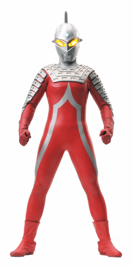

赛文·奥特曼
赛文·奥特曼是特摄剧《赛文·奥特曼》中的主人公，来自M78星云·光之国的恒星观测员340号，起初是为了制作轨道图而来到地球， 在目睹一个青年的英勇事迹后见证了人类的勇气与善良，便以这个青年的样貌为原形，化名为诸星弹，自愿留在地球上；后来更加入奥特警备队， 决心为保卫地球而战

赛文拥有众多不凡的格斗与光线技能，头部还装置有能通过脑波自由控制的武器·头镖，这些都让他在战斗中无往不利。 作为奥特兄弟中的三哥、赛罗·奥特曼的父亲，赛文也是宇宙警备队身经百战的勇者。